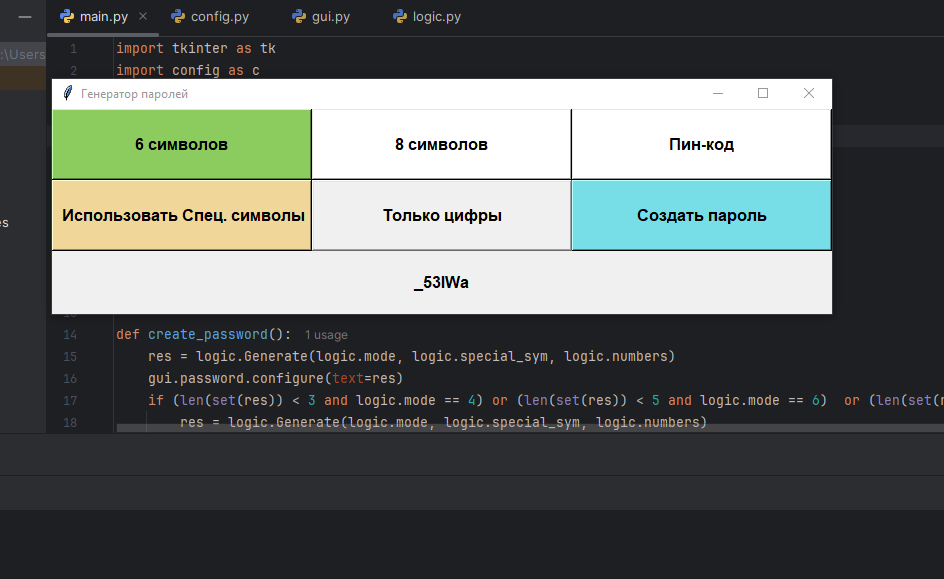
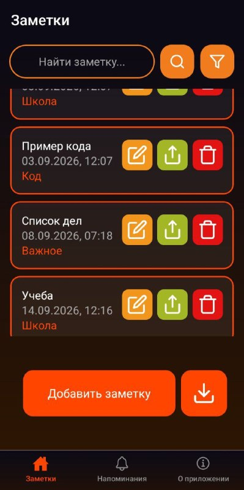
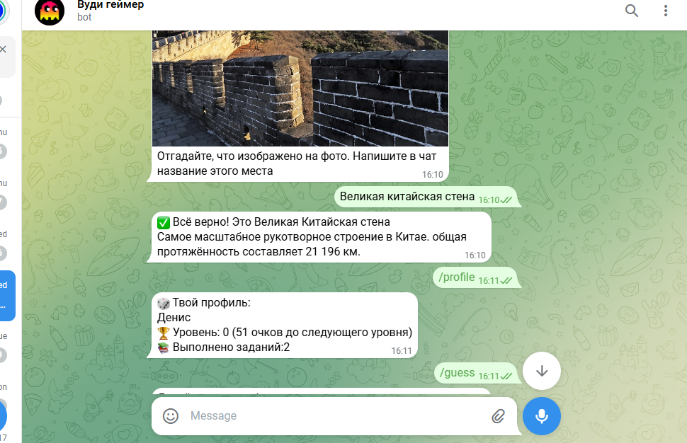
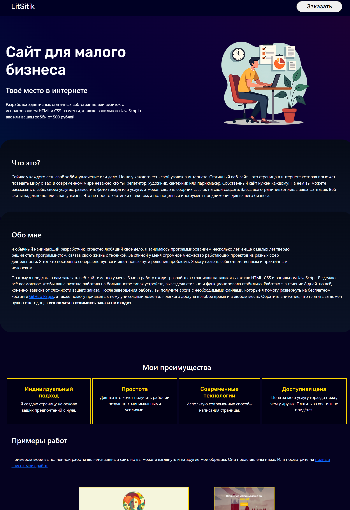

Апофема2D

Редактор геометрический фигур на плоскости. Данная программа с графическим
интерфейсом была написана мной на Python Tkinter и позволяет рисовать
различные фигуры на экране, менять их цвет, размер, вычислять периметр, площадь
для некоторых из них в относительных единицах измерения. Можно также менять
стиль самой программы, язык и масштаб интерфейса.
Подробнее на GitHub
Генератор пароля

Простая программа на Python Tkinter, которая нужна для гибкого создания случайного
пароля заданной длины.
Подробнее на GitHub
Заметки LavaNote

Android приложение для телефонов и планшетов на JavaScript + React Native + Expo, в котором можно создавать
заметки и напоминания, сортировать, фильтровать их, делиться ими и настраивать
форматирование текста с помощью лёгкого Markdown. Кроме того в приложение встроено
симметричное шифрование на основе алгоритма AES-256 и возможность настройки
пароля. Есть две цветовых темы на выбор. Приложение также некогда прошло
модерацию и было опубликовано в российском магазине приложений.
Подробнее на GitHub
Vudi Telegram бот

Асинхронный бот на Python, работающий внутри мессенджера Телеграм, с использованием библиотеки
aiogram, подключением через прокси сервер и лёгкой базой данных SQLite. Внутри реализована
простая игра на угадывание случайного места в мире по картинке и игра на быстрое
решение математического примера.
Подробнее на GitHub
Публичный статичный сайт

Статичная веб-страница, выполненная в стиле сайта-визитки, и написана на HTML, CSS и
JavaScript. Была создана мной с целью продвижения своих умений в сфере веб-разработки.
На странице присутствуют базовые анимации, есть семантическая разметка, адаптивный
дизайн, настроены мета-теги для отображения в поисковых системах вроде Яндекса.
Моя первая и единственная работа, где я также привязал короткий и понятный
публичный домен litsitik.ru.
Подробнее на GitHub